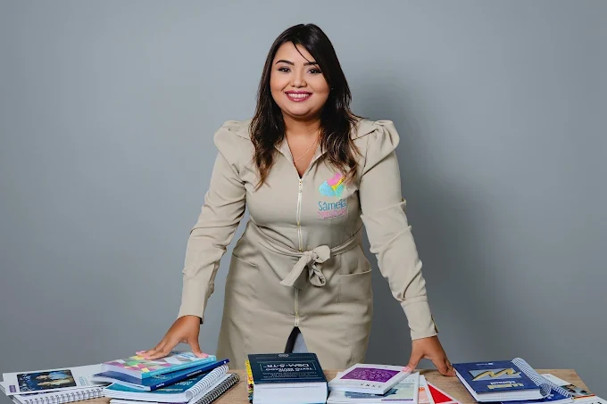
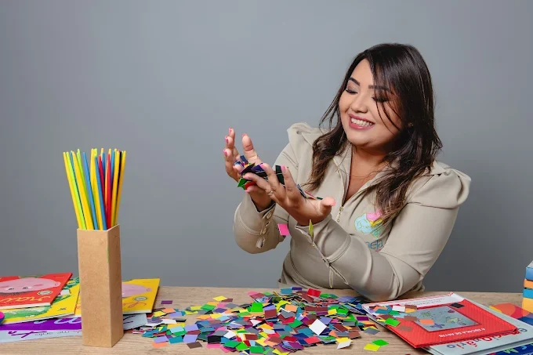

01 / NEUROPSICOLOGIA
Avaliação neuropsicológica
Investigação de habilidades cognitivas, como atenção, memória, linguagem e funções executivas, para compreender potencialidades e dificuldades.
Saber maisNEUROPSICOLOGIA EM CAMAÇARI
Avaliação e reabilitação neuropsicológica, com um olhar atento ao desenvolvimento, à aprendizagem e às particularidades de cada pessoa.


CONHEÇA A PROFISSIONAL
Psicóloga, neuropsicóloga e professora universitária.
Minha atuação reúne a Psicologia e a Neurociência para compreender as particularidades do funcionamento cognitivo, emocional e comportamental.
Atuo com avaliação e reabilitação neuropsicológica e tenho experiência em psicologia clínica e escolar, com atendimento a crianças, adolescentes e adultos.
ÁREAS DE ATUAÇÃO
Conheça os atendimentos e encontre orientação para as suas necessidades.
Investigação de habilidades cognitivas, como atenção, memória, linguagem e funções executivas, para compreender potencialidades e dificuldades.
Saber maisIntervenções voltadas ao desenvolvimento de estratégias para lidar com dificuldades cognitivas e favorecer a autonomia no cotidiano.
Saber maisEspaço de escuta e acompanhamento para questões emocionais, comportamentais e relacionadas ao desenvolvimento, em diferentes fases da vida.
Saber maisNEURODESENVOLVIMENTO
O desenvolvimento envolve processos cognitivos, emocionais e sociais. Quando surgem dúvidas, a orientação profissional pode ajudar a compreender o que está acontecendo.
Acompanhar conteúdosOrganização, planejamento e autorregulação.
Leitura, escrita e dificuldades no contexto escolar.
Informações sobre TDAH, autismo e outros transtornos do desenvolvimento.
PRIMEIRO PASSO
Entre em contato para apresentar sua demanda e conhecer as possibilidades de atendimento.
DÚVIDAS FREQUENTES
Algumas respostas para ajudar você a entender melhor a neuropsicologia.
É um processo de investigação do funcionamento cognitivo e comportamental, que pode incluir entrevistas, observações e instrumentos específicos, conforme a necessidade de cada caso.
A avaliação busca compreender habilidades e dificuldades. A reabilitação trabalha estratégias e intervenções para lidar com as dificuldades identificadas.
Dúvidas relacionadas à memória, atenção, aprendizagem ou mudanças cognitivas e comportamentais podem motivar uma conversa inicial com a profissional.
Entre em contato pelo WhatsApp para consultar informações sobre horários, modalidades, valores e agendamento.
CONTATO E LOCALIZAÇÃO
Entre em contato para saber mais sobre os atendimentos ou agendar sua consulta.